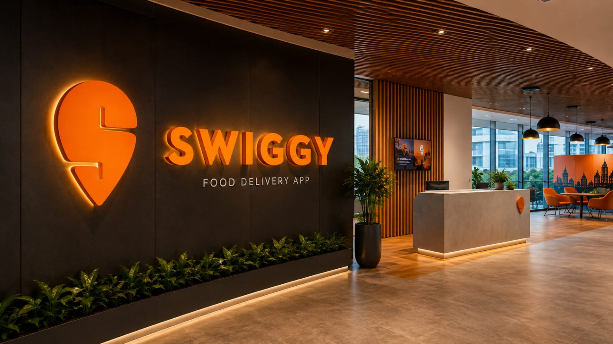

Swiggy is one of India’s leading food delivery and convenience platforms. It connects customers with restaurants and delivery partners through a simple and technology-driven platform. Swiggy makes food ordering fast, easy and convenient for customers across different cities.
Customers can discover restaurants, explore different cuisines, order their favourite meals, make secure payments and track their deliveries in real time. Swiggy continuously uses technology and innovation to improve delivery speed, customer satisfaction and overall operational efficiency.
